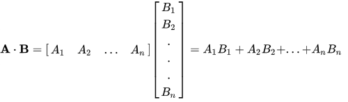

Profesor: Joel Fuentes
Ayudantes: Daniel López, Sebastián González
Descripción
En este laboratorio Ud. deberá implementar un programa en DPC++ que calcule el producto escalar (también conocido
como inner product) entre dos vectores. El producto escalar es una operación algebraica que toma dos secuencias de números de igual dimensión (usualmente en la forma de vectores) y retorna un único número.
Considerando que existen dos vectores \(A\) y \(B\) en un espacio \({\displaystyle \mathbb {R}^{n}}\), el producto escalar se realiza como un producto matricial de la siguiente forma:

O de manera equivalente como:
$$\sum_{1}^{n}A_iB_i$$
El objetivo es que esta operación sobre vectores se
ejecute en paralelo en un acelerador (CPU multi-core, GPU o FPGA), para lo cual puede programar uno o más
kernels en DPC++. Considerando los siguientes requisitos:
- El kernel debe usar ND_Range
- La suma de productos debe realizarse usando reducciones
Código de base para programar su solución:
#include <CL/sycl.hpp>
#include <iostream>
using namespace sycl;
int main(){
constexpr int size = 16;
std::vector<int> A(size);
std::vector<int> B(size);
std::vector<int> C(size);
int innerProd = 0;
// Inicializar vectores
for (int i = 0; i < size; i++) {
A[i] = (rand() % 100) + 1;
B[i] = (rand() % 100) + 1;
}
queue q;
// Creación del buffer
buffer buffA(A);
buffer buffB(B);
buffer buffC(C);
// Buffer para resultado final de producto interno
buffer<int, 1> buffSum(&innerProd, 1);
/***
* Agregue kernel(s) aquí
*
*
***/
// Mostrar resultados finales
host_accessor buffC_host(buffC);
host_accessor innerProd_result(buffSum);
for(int i=0; i < size; i++)
std::cout << "C[" << i << "] = " << buffC_host[i] << std::endl;
std::cout << "Resultado producto interno: " << innerProd << std::endl;
return 0;
}
En el siguiente link encontrará una Wiki con detalles sobre DPC++: http://www.face.ubiobio.cl/~jfuentes/classes/ch/unit2/dpcpp
Para probar su implementación, se recomienda ejecutarlo en servidores Devcloud. En el siguiente
link encontrará una Wiki con detalles sobre la configuración del entorno de desarrollo Devcloud y
compilación con DPC++: http://www.face.ubiobio.cl/~jfuentes/classes/ch/unit2/devcloud
Solución
#include <CL/sycl.hpp>
#include <iostream>
using namespace sycl;
int main(){
constexpr int size = 16;
std::vector<int> A(size);
std::vector<int> B(size);
std::vector<int> C(size);
int innerProd = 0;
// Inicializar vectores
for (int i = 0; i < size; i++) {
A[i] = (rand() % 100) + 1;
B[i] = (rand() % 100) + 1;
}
queue q;
// Creación del buffer
buffer buffA(A);
buffer buffB(B);
buffer buffC(C);
// Buffer para resultado final de producto interno
buffer<int, 1> buffSum(&innerProd, 1);
auto kernel1 = q.submit([&](handler& h){
accessor bA(buffA, h);
accessor bB(buffB, h);
accessor bC(buffC, h);
h.parallel_for(nd_range<1>({size, 1}), [=](auto idx){
auto id_hilo = idx.get_global_id();
bC[id_hilo] = bA[id_hilo]*bB[id_hilo];
});
});
auto kernel2 = q.submit([&](handler& h){
h.depends_on(kernel1);
accessor bC(buffC, h);
auto sumReduction = reduction(buffSum, h, plus<>());
h.parallel_for(nd_range<1>({size, 1}), sumReduction, [=](auto idx, auto& sum){
auto id_hilo = idx.get_global_id();
sum.combine(bC[id_hilo]);
});
});
host_accessor buffC_host(buffC);
host_accessor innerProd_result(buffSum);
for(int i=0; i < size; i++)
std::cout << "C[" << i << "] = " << buffC_host[i] << std::endl;
std::cout << "Resultado producto interno: " << innerProd << std::endl;
return 0;
}